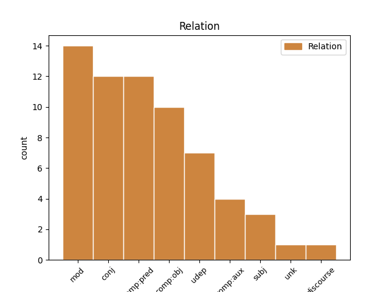
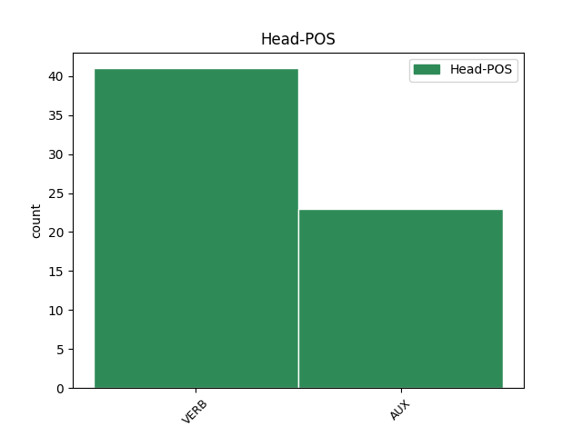
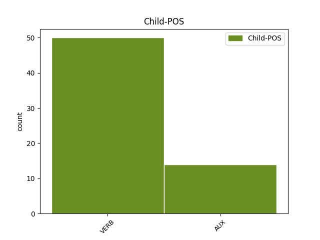

Distribution of features within this leaf



Agreement Rules sorted by frequency.
- When the dependent token is the conjunct(conj) of the head token, and the dependent token is VERB.
1 تەنتەربىيە _ _ _ _ 0 _ _ _
2 خەۋەرلىرى _ _ _ _ 0 _ _ _
3 دەمسىز _ _ _ _ 0 _ _ _
4 ، _ _ _ _ 0 _ _ _
5 پەن–تېخنىكا _ _ _ _ 0 _ _ _
6 كۆرگەزمىسى _ _ _ _ 0 _ _ _
7 دەمسىز دە VERB N Mood=Ind|Number=Sing|Person=2|Polite=Form|Tense=Aor|VerbForm=Fin 0 _ _ _
8 ، _ _ _ _ 0 _ _ _
9 يەنە _ _ _ _ 0 _ _ _
10 مۇزىكىدىن _ _ _ _ 0 _ _ _
11 ھوزۇرلىنىش _ _ _ _ 0 _ _ _
12 دەمسىز دە VERB N Mood=Ind|Number=Sing|Person=2|Polite=Form|Tense=Aor|VerbForm=Fin 7 conj _ SpaceAfter=No|Translit=demsiz
13 ... _ _ _ _ 0 _ _ _
14 ئىشقىلىپ _ _ _ _ 0 _ _ _
15 ، _ _ _ _ 0 _ _ _
16 نېمە _ _ _ _ 0 _ _ _
17 كېرەك _ _ _ _ 0 _ _ _
18 بولسا _ _ _ _ 0 _ _ _
19 ، _ _ _ _ 0 _ _ _
20 شۇ _ _ _ _ 0 _ _ _
21 تېپىلىدىكەن _ _ _ _ 0 _ _ _
22 . _ _ _ _ 0 _ _ _
1 ئايالىم _ _ _ _ 0 _ _ _
2 قولىنى _ _ _ _ 0 _ _ _
3 قولۇمدىن _ _ _ _ 0 _ _ _
4 ئېلىپ _ _ _ _ 0 _ _ _
5 ھويلىغا _ _ _ _ 0 _ _ _
6 چىقتى _ _ _ _ 0 _ _ _
7 ۋە _ _ _ _ 0 _ _ _
8 ۋېلىسىپىتىنى _ _ _ _ 0 _ _ _
9 ئېلىپ _ _ _ _ 0 _ _ _
10 : _ _ _ _ 0 _ _ _
11 — _ _ _ _ 0 _ _ _
12 ئارقا _ _ _ _ 0 _ _ _
13 دەرۋازىغا _ _ _ _ 0 _ _ _
14 چىقىپ _ _ _ _ 0 _ _ _
15 كېلەي _ _ _ _ 0 _ _ _
16 ! _ _ _ _ 0 _ _ _
17 كەلگەندە _ _ _ _ 0 _ _ _
18 ھەممىنى _ _ _ _ 0 _ _ _
19 سۆزلەپ _ _ _ _ 0 _ _ _
20 بېرىمەن بار VERB V Mood=Ind|Number=Sing|Person=1|Tense=Aor|VerbForm=Fin 23 comp:obj _ SpaceAfter=No|Translit=bërimen
21 ، _ _ _ _ 0 _ _ _
22 – _ _ _ _ 0 _ _ _
23 دېدى دې VERB V Mood=Ind|Number=Plur|Person=3|Tense=Past|VerbForm=Fin 0 _ _ _
24 . _ _ _ _ 0 _ _ _
1 بىزمۇ _ _ _ _ 0 _ _ _
2 دۇنيادا _ _ _ _ 0 _ _ _
3 مەيدىمىزنى _ _ _ _ 0 _ _ _
4 كېرىپ _ _ _ _ 0 _ _ _
5 يۈرىدىغان _ _ _ _ 0 _ _ _
6 بولىمىز بول AUX V Mood=Ind|Number=Plur|Person=1|Tense=Aor|VerbForm=Fin 9 comp:obj _ SpaceAfter=No|Translit=bolimiz
7 ، _ _ _ _ 0 _ _ _
8 - _ _ _ _ 0 _ _ _
9 دېدى دې VERB V Mood=Ind|Number=Sing|Person=3|Tense=Past|VerbForm=Fin 0 _ _ _
10 ھۈسەيىن _ _ _ _ 0 _ _ _
11 ئەپەندى _ _ _ _ 0 _ _ _
12 ھاياجان _ _ _ _ 0 _ _ _
13 بىلەن _ _ _ _ 0 _ _ _
14 . _ _ _ _ 0 _ _ _
1 _ _ _ _ _ 0 _ _ _
2 رەھمەت _ _ _ _ 0 _ _ _
3 سىزگە _ _ _ _ 0 _ _ _
4 ، _ _ _ _ 0 _ _ _
5 ئايخان _ _ _ _ 0 _ _ _
6 ، _ _ _ _ 0 _ _ _
7 بىزنىڭ _ _ _ _ 0 _ _ _
8 ئەڭ _ _ _ _ 0 _ _ _
9 مۈشكۈل _ _ _ _ 0 _ _ _
10 ئىشىمىزنى _ _ _ _ 0 _ _ _
11 ھەل _ _ _ _ 0 _ _ _
12 قىلىپ _ _ _ _ 0 _ _ _
13 بەرگەن بەر VERB V Mood=Ind|Number=Sing|Person=3|Tense=Past|VerbForm=Fin 14 comp:pred _ Translit=bergen
14 بولدىڭىز بول AUX V Mood=Ind|Number=Sing|Person=2|Polite=Form|Tense=Past|VerbForm=Fin 0 _ _ _
15 . _ _ _ _ 0 _ _ _
1 راست _ _ _ _ 0 _ _ _
2 ، _ _ _ _ 0 _ _ _
3 سەن _ _ _ _ 0 _ _ _
4 ئاكا _ _ _ _ 0 _ _ _
5 ئىدىڭ _ _ _ _ 0 _ _ _
6 ، _ _ _ _ 0 _ _ _
7 بىزگە _ _ _ _ 0 _ _ _
8 ئەسلىي _ _ _ _ 0 _ _ _
9 ئاكىلا _ _ _ _ 0 _ _ _
10 ئىدىڭ ئى AUX V Mood=Ind|Number=Sing|Person=2|Tense=Past|VerbForm=Fin 0 _ _ _
11 ، _ _ _ _ 0 _ _ _
12 لېكىن _ _ _ _ 0 _ _ _
13 سېنىڭ _ _ _ _ 0 _ _ _
14 بىزگە _ _ _ _ 0 _ _ _
15 قىلغان _ _ _ _ 0 _ _ _
16 ئەجرىڭ _ _ _ _ 0 _ _ _
17 ئاكىلىقتىن _ _ _ _ 0 _ _ _
18 جىق _ _ _ _ 0 _ _ _
19 ئېشىپ _ _ _ _ 0 _ _ _
20 كەتتى كەت AUX V Mood=Ind|Number=Sing|Person=3|Tense=Past|VerbForm=Fin 10 conj _ SpaceAfter=No|Translit=ketti
21 . _ _ _ _ 0 _ _ _
1 مەشرەپلەردە _ _ _ _ 0 _ _ _
2 ئەخلاق _ _ _ _ 0 _ _ _
3 ۋە _ _ _ _ 0 _ _ _
4 جامائەت _ _ _ _ 0 _ _ _
5 ئىنتىزامى _ _ _ _ 0 _ _ _
6 ، _ _ _ _ 0 _ _ _
7 سەنئەت _ _ _ _ 0 _ _ _
8 ۋە _ _ _ _ 0 _ _ _
9 تەربىيە _ _ _ _ 0 _ _ _
10 زىچ _ _ _ _ 0 _ _ _
11 بىرلەشكەن بىرلەش VERB V Mood=Ind|Number=Sing|Person=3|Tense=Past|VerbForm=Fin 12 comp:aux _ Translit=birleshken
12 بولىدۇ بول AUX V Mood=Ind|Number=Sing|Person=3|Tense=Aor|VerbForm=Fin 0 _ _ _
13 . _ _ _ _ 0 _ _ _
1 ئۇستاز _ _ _ _ 0 _ _ _
2 يوليورۇق _ _ _ _ 0 _ _ _
3 بېرىپ _ _ _ _ 0 _ _ _
4 بولغان _ _ _ _ 0 _ _ _
5 ، _ _ _ _ 0 _ _ _
6 شۇنىڭ _ _ _ _ 0 _ _ _
7 بىلەن _ _ _ _ 0 _ _ _
8 « _ _ _ _ 0 _ _ _
9 ۋەسسالام _ _ _ _ 0 _ _ _
10 ، _ _ _ _ 0 _ _ _
11 دېمەككە _ _ _ _ 0 _ _ _
12 » _ _ _ _ 0 _ _ _
13 بولىدۇ بول AUX V Mood=Ind|Number=Sing|Person=3|Tense=Aor|VerbForm=Fin 18 udep _ SpaceAfter=No|Translit=bolidu
14 ، _ _ _ _ 0 _ _ _
15 گەپ _ _ _ _ 0 _ _ _
16 قىلىشنىڭ _ _ _ _ 0 _ _ _
17 ئورنى _ _ _ _ 0 _ _ _
18 قالمايدۇ قال VERB V Mood=Ind|Number=Sing|Person=3|Polarity=Neg|Tense=Aor|VerbForm=Fin 0 _ _ _
19 . _ _ _ _ 0 _ _ _
Disagree Examples:
1 ئەمما _ _ _ _ 0 _ _ _
2 ، _ _ _ _ 0 _ _ _
3 يېشى _ _ _ _ 0 _ _ _
4 40تىن _ _ _ _ 0 _ _ _
5 ئاشقان _ _ _ _ 0 _ _ _
6 بولسىمۇ بول AUX V Mood=Cnd|Number=Sing|Person=3|VerbForm=Conv 12 udep _ SpaceAfter=No|Translit=bolsimu
7 ، _ _ _ _ 0 _ _ _
8 تېخى _ _ _ _ 0 _ _ _
9 پەرزەنت _ _ _ _ 0 _ _ _
10 يۈزى _ _ _ _ 0 _ _ _
11 كۆرۈپ _ _ _ _ 0 _ _ _
12 باقمىدى باق VERB V Mood=Ind|Number=Sing|Person=3|Polarity=Neg|Tense=Past|VerbForm=Fin 0 _ _ _
13 . _ _ _ _ 0 _ _ _
1 _ _ _ _ _ 0 _ _ _
2 كۆڭلۈمدىكىنى _ _ _ _ 0 _ _ _
3 دېسەم دې VERB V Mood=Cnd|Number=Sing|Person=1|VerbForm=Conv 20 discourse _ SpaceAfter=No|Translit=dësem
4 ، _ _ _ _ 0 _ _ _
5 گەرچە _ _ _ _ 0 _ _ _
6 بالا _ _ _ _ 0 _ _ _
7 يۈزى _ _ _ _ 0 _ _ _
8 كۆرمىگەن _ _ _ _ 0 _ _ _
9 بولساممۇ _ _ _ _ 0 _ _ _
10 ، _ _ _ _ 0 _ _ _
11 ئاتا-ئانا _ _ _ _ 0 _ _ _
12 ئىككىڭلارنىڭ _ _ _ _ 0 _ _ _
13 كۆڭلىنى _ _ _ _ 0 _ _ _
14 تولۇق _ _ _ _ 0 _ _ _
15 چۈشىنىمەن _ _ _ _ 0 _ _ _
16 ھەمدە _ _ _ _ 0 _ _ _
17 سىلەرگە _ _ _ _ 0 _ _ _
18 تولىمۇ _ _ _ _ 0 _ _ _
19 مەستلىكىم _ _ _ _ 0 _ _ _
20 كېلىدۇ كەل VERB V Mood=Ind|Number=Plur|Person=3|Tense=Aor|VerbForm=Fin 0 _ _ _
21 . _ _ _ _ 0 _ _ _
1 بىزنىڭ _ _ _ _ 0 _ _ _
2 مەھەللىدە _ _ _ _ 0 _ _ _
3 بۇرۇن _ _ _ _ 0 _ _ _
4 مەكتەپ _ _ _ _ 0 _ _ _
5 يوق _ _ _ _ 0 _ _ _
6 ، _ _ _ _ 0 _ _ _
7 بىرلا _ _ _ _ 0 _ _ _
8 سىنىپ _ _ _ _ 0 _ _ _
9 بار بار VERB A Mood=Imp|VerbForm=Fin 10 comp:pred _ Translit=bar
10 ئىدى ئى AUX V Mood=Ind|Number=Sing|Person=3|Tense=Past|VerbForm=Fin 0 _ _ _
11 . _ _ _ _ 0 _ _ _
1 سەنمۇ _ _ _ _ 0 _ _ _
2 شۇنداق _ _ _ _ 0 _ _ _
3 ، _ _ _ _ 0 _ _ _
4 سەندىمۇ _ _ _ _ 0 _ _ _
5 شۇنداق _ _ _ _ 0 _ _ _
6 بىر _ _ _ _ 0 _ _ _
7 قۇدرەت _ _ _ _ 0 _ _ _
8 بولمىغان بول VERB V Mood=Ind|Number=Plur|Person=3|Polarity=Neg|Tense=Past|VerbForm=Fin 9 comp:aux _ Translit=bolmighan
9 بولسا بول AUX V Mood=Cnd|Number=Sing|Person=3|VerbForm=Conv 0 _ _ _
10 ، _ _ _ _ 0 _ _ _
11 بىزنى _ _ _ _ 0 _ _ _
12 ئەتراپىڭغا _ _ _ _ 0 _ _ _
13 ئولاشتۇرالمىغان _ _ _ _ 0 _ _ _
14 بولاتتىڭ _ _ _ _ 0 _ _ _
15 . _ _ _ _ 0 _ _ _
1 شۇ _ _ _ _ 0 _ _ _
2 چاغدا _ _ _ _ 0 _ _ _
3 : _ _ _ _ 0 _ _ _
4 « _ _ _ _ 0 _ _ _
5 سەن _ _ _ _ 0 _ _ _
6 بولساڭمۇ _ _ _ _ 0 _ _ _
7 ياخشى _ _ _ _ 0 _ _ _
8 ئوقۇغىن _ _ _ _ 0 _ _ _
9 ، _ _ _ _ 0 _ _ _
10 ئۇكام _ _ _ _ 0 _ _ _
11 ، _ _ _ _ 0 _ _ _
12 سەن _ _ _ _ 0 _ _ _
13 ئارزۇيۇڭغا _ _ _ _ 0 _ _ _
14 يەتسەڭ يەت VERB V Mood=Cnd|Number=Sing|Person=2|VerbForm=Conv 20 mod _ SpaceAfter=No|Translit=yetseng
15 ، _ _ _ _ 0 _ _ _
16 مەنمۇ _ _ _ _ 0 _ _ _
17 ئارزۇيۇمغا _ _ _ _ 0 _ _ _
18 يەتكەندەك _ _ _ _ 0 _ _ _
19 خۇش _ _ _ _ 0 _ _ _
20 بولىمەن بول VERB V Mood=Ind|Number=Sing|Person=1|Tense=Aor|VerbForm=Fin 0 _ _ _
21 » _ _ _ _ 0 _ _ _
22 دېگىنىڭ _ _ _ _ 0 _ _ _
23 ھېلىغىچە _ _ _ _ 0 _ _ _
24 قۇلاق _ _ _ _ 0 _ _ _
25 تۈۋىمدىن _ _ _ _ 0 _ _ _
26 كەتمەيدۇ _ _ _ _ 0 _ _ _
27 . _ _ _ _ 0 _ _ _